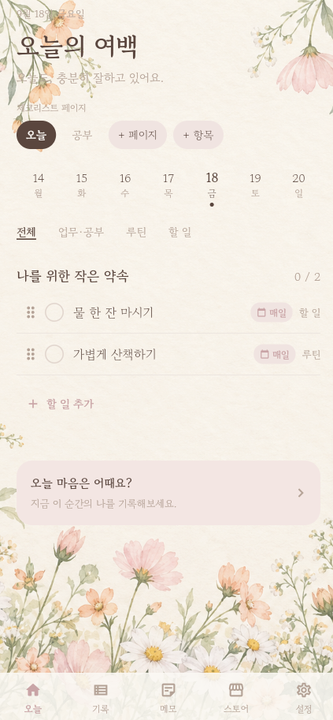
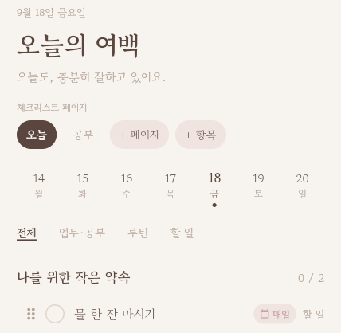
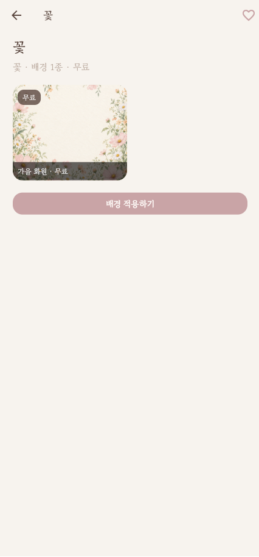
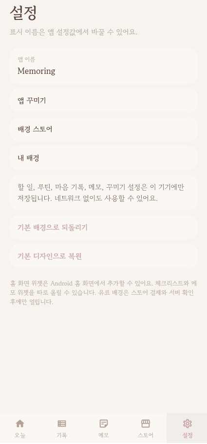

한 번만 적습니다
매일 반복되는 할 일을 페이지에 남겨 둡니다. 내일 아침을 위해 다시 쓰지 않습니다.
TYCHE LOOP ORIGINAL · 01
할 일은 자정이 되면 그대로 다시 채워집니다. 그다음으로, 하루의 분위기를 고르는 스킨 시스템이 있습니다.

APP OVERVIEW
첫째는 자정에 다시 초기화되는 체크리스트입니다. 둘째는 그 하루를 꾸미는 스킨 시스템입니다. 설정에서 배경을 고르고, 언제든 기본으로 되돌릴 수 있습니다.
매일 아침 같은 할 일을 다시 적지 않아도 됩니다. 자정이 되면 체크가 풀리고, 리스트는 그대로 돌아옵니다.
색 테마, 갤러리 사진, 스토어 배경팩이 오늘의 여백 전체가 됩니다.
앱 꾸미기, 배경 스토어, 내 배경. 기본 디자인으로 바로 돌아갈 수 있습니다.
01 · CHECKLIST
오늘의 리스트는 하루가 끝나도 지워 두고 내일 다시 쓰는 목록이 아닙니다. 자정이 되면 완료 표시만 풀리고, 적어 둔 할 일은 그대로 남습니다. 매일 같은 약속을 다시 적을 필요가 없습니다.
매일 반복되는 할 일을 페이지에 남겨 둡니다. 내일 아침을 위해 다시 쓰지 않습니다.
오늘 끝낸 일만 표시합니다. 완료는 하루의 기록이고, 목록 자체는 바뀌지 않습니다.
날짜가 바뀌면 체크만 풀립니다. 적어 둔 오늘의 여백이 그대로 돌아옵니다.

02 · SKIN SYSTEM
체크리스트 위의 화면 자체가 스킨입니다. 색 테마, 내 사진, 스토어 배경팩을 적용하고, 언제든 기본 디자인으로 되돌릴 수 있습니다.
APPLY
배경은 카드 한 장이 아니라 앱 전체의 분위기입니다. 할 일 목록, 날짜, 아래 탭까지 같은 화면 위에 놓입니다.
색 테마나 사진 배경을 고릅니다.
오늘의 여백에 바로 적용됩니다.
밝은 사진은 글자가 어두워져 읽기 쉽게 맞춰집니다.
MY SKINS
스토어에서 고른 배경팩은 사라지지 않습니다. 미리 보고, 마음에 들면 오늘의 배경으로 적용합니다.
배경 스토어에서 팩을 고릅니다.
내 배경에 모아 두고 미리 봅니다.
배경 적용하기로 오늘의 여백을 바꿉니다.

웜 아이보리와 더스티 로즈
부드러운 세이지 그린
따뜻한 오트 베이지
낮은 조명의 나이트 톤
로즈, 세이지, 오트, 나이트. 색은 바로 바뀝니다.
갤러리에서 고른 사진을 미리본 뒤 적용합니다.
이미지별 이름과 유무료가 있는 배경팩을 고릅니다.
설정에서 기본 디자인으로 바로 돌아갑니다.
03 · SETTINGS
앱을 어떻게 보이게 할지, 어떤 배경을 살지, 지금 가진 스킨이 무엇인지를 설정에서 고릅니다. 기본으로 돌아가는 길도 같습니다.
CONTROL
설정은 부가 메뉴가 아니라 스킨 시스템의 입구입니다. 꾸미고, 모으고, 마음에 없으면 되돌립니다.
앱 꾸미기에서 색과 분위기를 고릅니다.
배경 스토어와 내 배경으로 스킨을 관리합니다.
기본 되돌리기로 처음 디자인으로 돌아갑니다.

PROJECT INFORMATION
MEMORING
자정에 다시 채워지는 체크리스트, 그리고 하루의 분위기를 고르는 스킨.